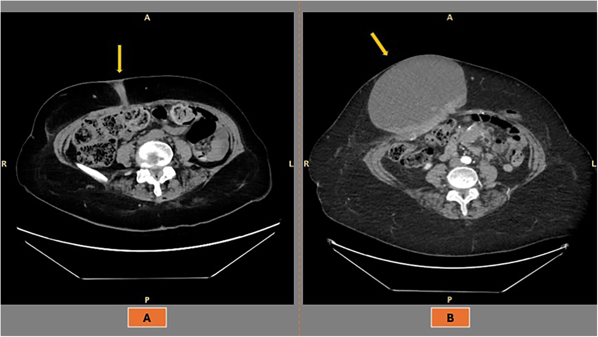
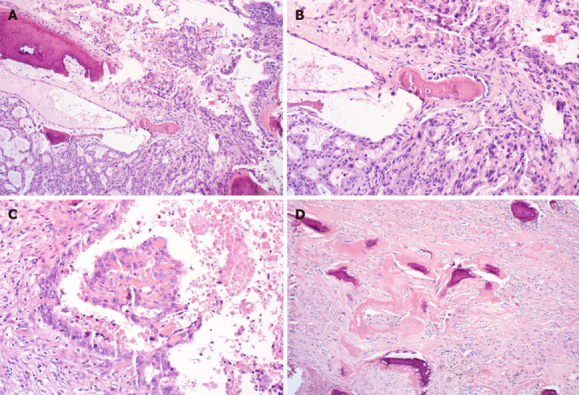
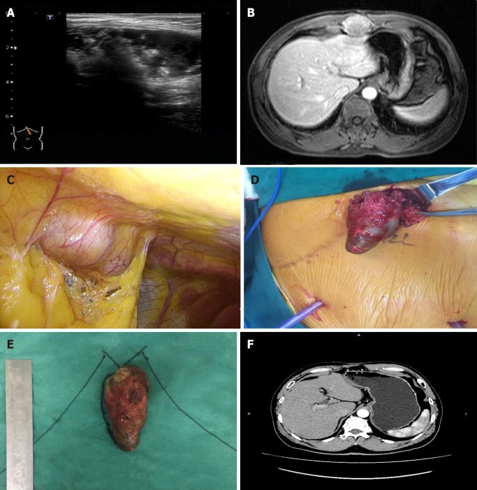

3061 — Di căn lỗ trocar sau PIPAC và phẫu thuật nội soi: nốt thành bụng mới là áp-xe hay di căn, và khi nào phải cắt toàn thành
Tags: pattern:di-can pattern:not pattern:ap-xe-sau-mo vung:thanh-bung vung:phuc-mac vung:o-bung anatomy:thanh-bung protocol:PIPAC protocol:CT-bung-co-can-quang protocol:sieu-am-tai-cho protocol:MRI-bung incidentaloma:not-thanh-bung
Mức chắc chắn (certainty): tổng hợp y văn (literature synthesis) — ghép tổng quan hệ thống 5 nghiên cứu về di căn lỗ trocar sau nội soi chẩn đoán ở ung thư buồng trứng (Front Surg 2026, DOI 10.3389/fsurg.2026.1777548), tổng quan 36 bài về sinh bệnh học – tiên lượng (Cancer Manag Res 2025, CC BY-NC 4.0), registry PIPAC 2.456 thủ thuật (Pleura Peritoneum 2023, PMC10739278) và ca di căn lỗ trocar vôi hóa 10 năm sau cắt túi mật nội soi (World J Clin Cases 2020, PMC7716338). Không có ca do nhóm tự chụp.
Câu hỏi thực hành: nữ 62 tuổi, ung thư buồng trứng tái phát phúc mạc, đang PIPAC chu kỳ 3. Ngày 10 sau PIPAC: sốt 37,8 °C, đau nhẹ, sờ thấy nốt 12 mm ở lỗ trocar cũ cạnh rốn. Siêu âm: nốt giảm âm, có tín hiệu mạch. Câu hỏi: đây là áp-xe lỗ trocar — biến chứng đã biết của PIPAC — hay di căn lỗ trocar? Chọc hút ngay hay chụp thêm, và nếu là di căn thì cắt hay theo dõi? Bài chốt ba quyết định: (1) nốt đặc ngấm thuốc nằm đúng đường trocar ở bệnh nhân ung thư phúc mạc phải coi là di căn cho tới khi chứng minh ngược — kể cả khi có sốt, vì áp-xe và di căn hoại tử chồng hình ảnh; (2) siêu âm đầu dò thẳng + CT 1–2 mm có so phim nền là bộ đôi đầu tay, MRI/DWI khi cần phân biệt u hạt – lạc nội mạc – xơ cơ, PET/CT chỉ để phân giai đoạn; (3) di căn lỗ trocar đơn độc → cắt toàn thành từ da tới phúc mạc; đã có bệnh phúc mạc/di căn xa (95% ca) → điều trị hệ thống, cắt tại chỗ chỉ khi chảy máu/đau/nhiễm. Nối 1905 – Biến chứng & an toàn PIPAC, 1903 – Theo dõi sau CRS/HIPEC & PIPAC, 141 – Phúc mạc: cổ trướng & carcinomatosis, 910 – Dẫn lưu áp-xe qua da.
1. Tổng quan bệnh học – cơ chế hình ảnh: vì sao tế bào phúc mạc lại "mọc" ở thành bụng
- Định nghĩa – vị trí chính xác: di căn lỗ trocar (port-site metastasis, PSM) là u thứ phát nằm trong đường trocar, từ da → mô dưới da → cân/cơ → phúc mạc, do tế bào u gieo rắc trong lúc nội soi rồi cấy vào vết thương. Vì là kênh xuyên toàn thành, nốt có thể nằm ở bất kỳ độ sâu nào, không chỉ dưới da — ca WJCC 2020 mô tả khối nằm giữa các cơ thành bụng (PMC7716338).
- Tần suất – con số quyết định mức nghi ngờ: ở ung thư phụ khoa, PSM gặp 0,16–2,3% các ca nội soi (tổng quan 36 bài, CMAR 2025). Ở ung thư buồng trứng, con số phụ thuộc cách phát hiện: 1,18% trên 2.251 thủ thuật (2,10% ở nhóm u phần phụ) khi chẩn đoán bằng lâm sàng/hình ảnh; 17% khi khám mô học mảnh cắt lỗ trocar; 46,7% (100/214 ca) và 49% các lỗ trocar được cắt khi cắt lỗ trocar hàng loạt rồi xét nghiệm (Front Surg 2026). Khác biệt 40 lần này là bài học đầu tiên: "hiếm trên lâm sàng" không có nghĩa "hiếm trên mô học".
- Ung thư túi mật phát hiện tình cờ: PSM gặp 10,3% sau cắt túi mật nội soi (World J Clin Cases 2020, PMC7716338); đây là nhóm nguy cơ cao thứ hai sau ung thư buồng trứng, và là lý do phải theo dõi vết mổ + lỗ trocar, không chỉ gan.
- Sau PIPAC – khoảng trống bằng chứng phải nói rõ: registry 2.456 thủ thuật ghi 14 sự kiện ở nhóm lỗ trocar (0,57%), trong đó 12 ca chảy máu/tụ máu/thoát vị và 2 ca phân loại nhầm — không có dòng "di căn lỗ trocar" (Pleura Peritoneum 2023, PMC10739278); tổng quan 10 năm PIPAC cũng không báo tỷ lệ PSM (Cancers 2023, PMC9954579). Vậy chưa có tỷ lệ PSM sau PIPAC được định lượng — không được trích một con số không tồn tại, nhưng cũng không được coi nốt mới ở lỗ trocar sau PIPAC là "phản ứng thuốc" mặc định.
- TẠI SAO tế bào bám được vào đường trocar — 4 cơ chế, cùng một đích hình ảnh:
- Cấy trực tiếp: dụng cụ, trocar, túi lấy bệnh phẩm hoặc dịch u tràn qua vết thương khi rút.
- Hiệu ứng ống khói (chimney effect): khí CO₂ rò vi lượng dọc thân trocar trong suốt cuộc mổ, mang tế bào lên thành bụng.
- Áp lực ổ bụng kích thích tăng sinh: nghiên cứu in vivo cho thấy u phát triển tăng dần khi áp lực bơm 5 → 10 → 15 mmHg (CMAR 2025) — đúng dải PIPAC 12 mmHg/30 phút.
- Aerosol hóa: PIPAC phun thuốc dạng hạt lơ lửng; cùng nguyên lý, tế bào có thể bị aerosol hóa và lắng ở lỗ trocar — giả thuyết hợp lý nhưng chưa định lượng được ở người.
- TẠI SAO ung thư buồng trứng và cổ trướng là nhóm nguy cơ cao nhất: tế bào biểu mô buồng trứng bong tự nhiên vào dịch báng; cổ trướng ≥ 500 mL tăng nguy cơ OR 3,9 (KTC 95% 1,5–10,0; p = 0,005); xâm lấn pT3 OR 13,5 (2,93–62,0) và hạch dương pN1 OR 2,97 (1,31–6,72) (Front Surg 2026; CMAR 2025). Nói cách khác: bệnh càng lan trong phúc mạc, đường trocar càng "bị phơi nhiễm".
- TẠI SAO thời điểm rất khác nhau: PSM có thể lộ rất sớm — trung vị 17 ngày (4–730) trong loạt Ramirez — hoặc muộn — trung vị 7 tháng (0,1–26,2 tháng) trong loạt Zivanovic (Front Surg 2026). Ca WJCC xuất hiện 10 năm sau cắt túi mật. Vì vậy "đã mổ 5 năm, không thể là di căn" là một câu sai.
- TẠI SAO hình ảnh có thể phân biệt được — vật lý đơn giản:
- CT: mô u đặc 30–50 HU trước cản quang, tăng 20–40 HU sau tiêm; ổ hoại tử trung tâm 0–20 HU; máu tụ cấp 50–80 HU và không ngấm thuốc; mỡ −40 đến −120 HU; vôi hóa/xương > 200 HU. Đây là nền tảng để tách "đặc – máu – mỡ – vôi".
- Siêu âm: u đặc giảm âm, bờ không đều, có mạch trong u; áp-xe có viền dày, trung tâm trống, tăng âm mô mỡ quanh; tụ máu không có mạch, thay đổi theo thời gian (tăng âm → giảm âm).
- MRI: u tế bào cao → hạn chế khuếch tán (DWI sáng, ADC thấp), T2 tăng nhẹ, ngấm thuốc; mô xơ T2 rất thấp và ngấm chậm; máu cũ/lạc nội mạc T1 sáng. Cạm bẫy: mủ cũng hạn chế khuếch tán, nên DWI một mình không loại được áp-xe — phải đọc viền, khí và bối cảnh lâm sàng.
2. Mẫu hình + chẩn đoán phân biệt theo vị trí (Gamut)
- Mẫu hình cốt lõi: nốt đặc, ngấm thuốc, nằm trên trục đường trocar cũ, đơn độc hoặc nhiều ổ, thường không đau ở giai đoạn sớm.
- Theo độ sâu — quyết định đường mổ:
- Dưới da: nốt sờ thấy, dễ chọc hút nhầm; cắt cùng da và mô dưới da.
- Trong cơ (thẳng bụng): hay bị bỏ sót vì nằm sau cân; cần cắt cả bao cơ, có thể cần vá cân.
- Trước phúc mạc/ổ bụng: dính vào mặt sau thành bụng; phải cắt toàn thành và kiểm tra phúc mạc.
- Theo thành phần — quyết định chẩn đoán phân biệt:
- Đặc ngấm thuốc: di căn, u hạt, xơ cơ (desmoid), u mô mềm.
- Nang/hoại tử: áp-xe, seroma, lymphocele, di căn hoại tử.
- Vôi hóa/xương: di căn vôi hóa (như ca túi mật), u hạt chỉ khâu, dị vật — vôi hóa không loại trừ ác tính.
- Theo vị trí giải phẫu đặc thù:
- Rốn: trocar camera 10–12 mm, nơi hay gặp PSM nhất sau cắt túi mật; cũng là vị trí nốt chị em Joseph (Sister Mary Joseph) do u dạ dày – buồng trứng – đại tràng.
- Hố chậu phải/trái: trocar thao tác 5 mm; PSM nhỏ, dễ bị cho là hạch bẹn.
- Sẹo mổ dọc, chân dẫn lưu, đường sinh thiết: cùng cơ chế cấy tế bào, cùng cách xử trí.
- Gamut theo bối cảnh: ung thư buồng trứng/đại tràng/túi mật/dạ dày đã nội soi; PIPAC nhiều chu kỳ; CRS/HIPEC trước đó; nội soi chẩn đoán rồi mổ mở ngay sau (nguy cơ cao hơn nếu chờ lâu).
3. Bảng so sánh phân biệt (ma trận đối chiếu)
| Thực thể | Hình ảnh điển hình | Chốt vào (rule-in) | Chốt loại (rule-out) | Gợi ý xác nhận |
|---|---|---|---|---|
| Di căn lỗ trocar (PSM) | Nốt đặc 30–50 HU, ngấm thuốc, nằm đúng trục trocar, có thể xâm lấn da/cân; đa ổ; tiến triển theo thời gian | Nốt mới/tăng kích thước đúng đường trocar ở bệnh nhân ung thư phúc mạc; 95% có bệnh phúc mạc/di căn ngoài thành bụng đi kèm | Không nằm trên đường trocar, không ngấm thuốc, ổn định ≥ 12 tháng → ít nghĩ PSM | Sinh thiết lõi 14–16 G theo đường sẽ cắt; mô học + IHC |
| Áp-xe lỗ trocar | Ổ dịch 0–20 HU, viền dày ngấm thuốc, khí trong ổ, phù mỡ quanh; sốt, đau, CRP tăng | Sốt + đau + viền ngấm thuốc + khí, xuất hiện trong ngày 2–14 sau thủ thuật | Nốt đặc không có ổ dịch, không khí, không phản ứng viêm → loại | Chọc hút/dẫn lưu: cấy + tế bào học (không chỉ cấy) |
| Tụ máu thành bụng | Cấp: 50–80 HU, không ngấm; bán cấp giảm dần; siêu âm tăng âm → giảm âm; không có mạch trong ổ | Khởi phát ngay sau thủ thuật, đau khu trú, Hct giảm, không sốt | Có mạch trong u, ngấm thuốc, không thoái triển sau 4–6 tuần → loại | Siêu âm lặp 2–4 tuần; MRI nếu còn nghi |
| U hạt chỉ khâu | Siêu âm: khối giảm âm 100%, sợi chỉ tăng âm tuyến tính trong 91%; CT chỉ là mô mềm không đặc hiệu | Tiền sử mổ đúng vị trí + sợi tăng âm + không tăng kích thước | Không thấy sợi chỉ, tăng nhanh, xâm lấn cân → loại | Siêu âm bổ sung; sinh thiết nếu còn nghi |
| Xơ cơ (desmoid) | Khối trong cơ thẳng, dải T2 rất thấp, ngấm thuốc, bờ xâm lấn; DWI không hạn chế mạnh | Sẹo mổ cũ + dải xơ T2 + tăng chậm | Hạn chế khuếch tán mạnh, hoại tử, xâm lấn da → loại | MRI; sinh thiết nếu tăng nhanh |
| Lạc nội mạc thành bụng | Nốt trong sẹo, T1 sáng, T2 shading, đau theo chu kỳ; siêu âm giảm âm | Đau theo kinh + T1 sáng + vị trí sẹo | T1 không sáng, không liên quan chu kỳ → loại | MRI; sinh thiết |
| Thoát vị lỗ trocar | Khiếm khuyết cân, chứa mỡ/ruột, thay đổi theo Valsalva | Thấy cổ túi + nội dung thoát qua cân | Không có khiếm khuyết cân, khối đặc trong cơ → loại | Siêu âm Valsalva; CT |
| Nang thanh dịch/lymphocele | Nang 0–20 HU, thành mỏng, không ngấm, bờ đều | Nang đơn thuần, không vách, không khí, không mạch | Thành dày, vách, mạch trong u → loại | Siêu âm; chọc hút nếu có triệu chứng |

Cùng một bệnh nhân ung thư buồng trứng FIGO IIIC sau nội soi chẩn đoán: (A) tái phát nhỏ, xuyên từ da tới cơ ở đường trocar; (B) tiến triển thành khối 15 × 18 cm dù đã hóa trị. Đây là lý do nốt nhỏ ở đường trocar không được theo dõi thụ động. Nguồn: Front Surg 2026, DOI 10.3389/fsurg.2026.1777548, CC BY 4.0.4. Protocol chụp – không có RADS riêng – quy trình quyết định
4.1 Chụp gì, đo gì
- Siêu âm đầu dò thẳng 7–15 MHz là bước đầu tiên tại giường: xác định đặc hay nang, bờ, mạch trong u, liên hệ với cân cơ và phúc mạc, đo 3 chiều, đánh dấu vị trí bằng ga-rô/da. Siêu âm phân biệt tốt nang – đặc – máu tụ, nhưng không phân biệt được u hạt với di căn nhỏ.
- CT bụng–chậu có cản quang, lát 1–2 mm, thì tĩnh mạch cửa, là chuẩn để đo và so sánh: đọc toàn bộ thành bụng từ da tới phúc mạc (không chỉ nhìn phúc mạc), ghi số ổ, vị trí theo 4 cung, độ sâu (dưới da/cơ/trước phúc mạc), kích thước 3 chiều, mức ngấm thuốc, xâm lấn da. Luôn so phim nền cùng mức cắt — tăng ≥ 20% đường kính hoặc nốt mới là dữ kiện quan trọng hơn kích thước tuyệt đối.
- MRI khi CT/siêu âm không kết luận: T1, T2 fat-sat, DWI b = 800–1000 + ADC, T1 sau tiêm. Chỉ định rõ: nghi lạc nội mạc/xơ cơ, nốt dính cơ – cân cần hoạch định cắt, hoặc dị ứng cản quang.
- PET/CT không phải công cụ chẩn đoán nốt tại chỗ: dùng để phân giai đoạn khi định cắt. SUVmax không phân biệt được áp-xe/u hạt với di căn; âm giả gặp ở u nhầy, ổ hoại tử nhỏ < 5–8 mm.
- Sinh thiết lõi 14–16 G dưới siêu âm/CT khi nốt không điển hình hoặc cần chứng minh trước điều trị hệ thống. Đi theo đúng đường sẽ cắt để lấy luôn đường kim; không chọc hút kim nhỏ đơn thuần nếu nghĩ di căn (ít mô, không đủ hóa mô miễn dịch). Nếu là áp-xe: chọc hút/dẫn lưu là điều trị, nhưng vẫn gửi tế bào học vì áp-xe có thể che di căn.
4.2 Không có hệ phân độ RADS — phân tầng bằng 3 biến
| Tầng | Tiêu chí | Hướng xử trí |
|---|---|---|
| PSM đơn độc | 1 ổ, không có bệnh phúc mạc/di căn ngoài thành bụng, cắt được | Cắt toàn thành da → phúc mạc, lấy hết đường trocar kèm bờ mô lành, vá cân/mạc nếu khuyết lớn; theo dõi sát |
| PSM + bệnh trong ổ bụng | 95% ca có bệnh phúc mạc/di căn đi kèm | Điều trị hệ thống theo bệnh nền; cắt tại chỗ chọn lọc khi đau, chảy máu, nhiễm, hoặc để giảm thể tích |
| PSM lan tỏa | Nhiều ổ thành bụng ± di căn xa, không cắt được | Giảm nhẹ: xạ tại chỗ để cầm máu/giảm đau, chăm sóc hỗ trợ |
- Điều trị tại chỗ: cắt toàn thành (da, mô dưới da, cân, cơ, phúc mạc) — không "bóc nốt" vì còn lại đường trocar là nguồn tái phát. Khuyết lớn dùng vá cân/lưới; trong bệnh phúc mạc tiến triển, ưu tiên vá mô tự thân để giảm nhiễm lưới.
- Cắt lỗ trocar hàng loạt lúc CRS không phải "miễn phí": kiểm soát tại chỗ tốt (không tái phát sau cắt trong loạt Ataseven), nhưng biến chứng Clavien–Dindo 3–5 tăng 41,0% so với 14,9% (p < 0,001) và biến chứng vết thương 34% so với 17% (RR 2,42; KTC 95% 1,09–5,35; p = 0,029) (Front Surg 2026). Vì vậy cắt chọn lọc, không cắt mù.
- Tiên lượng: PSM không làm tăng tử vong độc lập sau khi hiệu chỉnh giai đoạn/hạch/cổ trướng (HR 0,87; p = 0,642; một loạt khác p = 0,92). Nó là dấu hiệu của bệnh phúc mạc lan, không phải bệnh riêng — nhưng vẫn phải chẩn đoán đúng để không mổ oan và không bỏ sót nhiễm.
flowchart TD
A["Nốt mới ở đường trocar cũ"] --> B{"Đúng trục trocar và có phim nền?"}
B -->|"Không"| C["Đối chiếu biên bản mổ, đánh dấu da, chụp lại CT 1-2 mm"]
B -->|"Có"| D["Siêu âm đầu dò thẳng + CT có cản quang"]
C --> D
D --> E{"Đặc hay nang?"}
E -->|"Nang, thành mỏng, không ngấm"| F["Theo dõi 4-6 tuần: seroma/lymphocele"]
E -->|"Đặc, ngấm thuốc"| G{"Sốt, đau, CRP tăng, khí trong ổ?"}
G -->|"Có"| H["Nghĩ áp-xe: chọc hút/dẫn lưu + cấy + tế bào học"]
G -->|"Không"| I["Coi là di căn lỗ trocar tới khi chứng minh ngược"]
H --> J{"Sau 2-4 tuần nốt còn đặc/tăng?"}
J -->|"Có"| I
J -->|"Không"| F
I --> K{"Có bệnh phúc mạc hoặc di căn ngoài thành bụng?"}
K -->|"Không"| L["Cắt toàn thành da tới phúc mạc, lấy hết đường trocar"]
K -->|"Có"| M["Sinh thiết lõi theo đường cắt; điều trị hệ thống; cắt nếu có triệu chứng"]
4.3 Phòng ngừa — áp dụng cho cả PIPAC
- Xả hết CO₂ trước khi rút trocar, rút trocar dưới quan sát, tránh để khí phụt ra mang tế bào.
- Đóng cân mọi lỗ > 5 mm, đặc biệt khi có cổ trướng; dùng dụng cụ lấy bệnh phẩm kín (túi) thay vì kéo trực tiếp.
- Hạn chế sinh thiết u trực tiếp khi có thể lấy phúc mạc; rửa dụng cụ và lỗ trocar (chưa có bằng chứng mạnh nhưng hợp lý).
- PIPAC: giữ hệ kín, hút khí qua bộ lọc trước khi rút, kiểm tra và đóng lại tất cả lỗ trocar cuối thủ thuật; ghi vị trí trocar vào hồ sơ để lần sau đối chiếu (nối 1905).
- Không có biện pháp nào loại trừ hoàn toàn PSM — ca vẫn xảy ra dù kỹ thuật chuẩn (Vergote 17% trên mô học).
5. Biến thể bình thường và cạm bẫy
- "Nốt nhỏ = lành": ca WJCC 2020 có khối 5 × 3 × 3 cm, vôi hóa/xương hóa, xuất hiện 10 năm sau cắt túi mật; ban đầu có thể bị coi là u hạt/dị vật. Thời gian dài và vôi hóa không loại trừ di căn.
- "PET âm = lành": u nhầy, ổ hoại tử nhỏ, nốt < 5–8 mm có thể không tăng FDG; quyết định dựa vào CT + mô học, không dựa PET.
- "Có sốt thì là áp-xe": di căn hoại tử cũng sốt; ngược lại áp-xe sau PIPAC có thể không sốt ở người dùng corticoid. Hình thái + khí + viền quan trọng hơn triệu chứng đơn thuần.
- Chọc hút "áp-xe" mà không chụp: nốt đặc bị chọc sẽ gieo rắc đường kim và làm chậm chẩn đoán ung thư. Chỉ dẫn lưu khi có ổ dịch xác định; nốt đặc → sinh thiết lõi.
- U hạt chỉ khâu không phải lúc nào cũng đứng yên: ca trong y văn 2 cm, to dần qua 2 lần CT rồi mới được chẩn đoán lành tính (RadioGraphics 2020) — tăng kích thước không đủ để khẳng định ác, nhưng đủ để sinh thiết.
- Bỏ sót do chỉ nhìn phúc mạc: PSM nằm trong thành bụng, ngoài cửa sổ đọc thông thường; phải cuộn hết thành bụng và đối chiếu vị trí trocar.
- Trocar ngoài tầm chụp: CT bụng–chậu thường cắt từ đỉnh chậu; lỗ trocar dưới rốn hoặc ở hạ vị có thể nằm ngoài; đảm bảo FOV từ cơ hoành tới giao hợp mu.
- Lạc nội mạc thành bụng: nữ trẻ, đau theo chu kỳ, T1 sáng — đừng sinh thiết mù trước MRI.

H&E: (A, B) tuyến ác tính xâm nhập mô xơ; (C) tế bào u trong lòng mạch/ổ hoại tử; (D) xương dị sản/vôi hóa quanh ổ u — phản ứng của mô đệm, không phải dấu hiệu lành tính. Nguồn: World J Clin Cases 2020, PMC7716338, CC BY-NC 4.0.6. Tự lượng giá — Blind Quiz
Ca 1 — Nữ 79 tuổi, ung thư buồng trứng FIGO IIIC, 1 năm sau nội soi chẩn đoán. CT thấy nốt nhỏ ở thành bụng trước; 1 năm sau cùng vị trí là khối 15 × 18 cm. Nhìn hai ảnh, mô tả độ sâu và bờ trước khi đọc đáp án.
- Hỏi: nốt ở lớp nào của thành bụng? Dấu hiệu nào cho thấy đây là đường trocar chứ không phải hạch? Hai chẩn đoán phân biệt chính và một câu hỏi tiếp theo?
Bấm để hiện đáp án
- (A) Nốt nhỏ, xuyên từ da vào cơ, nằm đúng trục lỗ trocar; (B) khối lớn, bờ đa cung, xâm lấn toàn thành bụng, đè ruột.
- Chốt vào: vị trí đúng đường trocar cũ + bệnh phúc mạc nền + tăng kích thước nhanh → di căn lỗ trocar. Phân biệt: áp-xe/tụ máu sau thủ thuật (thường có viền/khí, khởi phát sớm) và u hạt/xơ cơ (ổn định, T2 thấp).
- Bước tiếp: so phim nền, siêu âm + CT 1–2 mm; nếu đặc và không có ổ dịch → sinh thiết lõi theo đường sẽ cắt. Bệnh đã lan phúc mạc → điều trị hệ thống, cắt tại chỗ chỉ khi có triệu chứng.
- Nguồn: Front Surg 2026, DOI 10.3389/fsurg.2026.1777548, CC BY 4.0.
Ca 2 — Nam 55 tuổi, 10 năm trước cắt túi mật nội soi vì viêm túi mật cấp; giải phẫu bệnh khi đó là ung thư biểu mô tuyến túi mật pT1b. Nay khối vùng thượng vị. Siêu âm, MRI và mổ cho thấy gì?

- Hỏi: khối nằm ngoài hay trong phúc mạc? Vì sao vôi hóa/xương hóa trong bệnh phẩm không làm thay đổi chẩn đoán? Kế hoạch điều trị?
Bấm để hiện đáp án
- Siêu âm: khối hỗn hợp, giảm âm không đồng nhất; MRI: khối dưới mũi ức; nội soi: khối ngoài phúc mạc, nằm giữa các cơ thành bụng; bệnh phẩm 5 × 3 × 3 cm.
- Vôi hóa/xương dị sản là phản ứng mô đệm quanh u (xương dị sản), không phải canxi hóa lành tính; chẩn đoán là di căn/ xâm lấn ung thư biểu mô tuyến túi mật.
- Điều trị: cắt toàn thành bụng (đã làm), theo dõi 31 tháng không tái phát. Bài học: PSM có thể xuất hiện 10 năm sau mổ và cắt được khi còn đơn độc.
- Nguồn: World J Clin Cases 2020, PMC7716338, CC BY-NC 4.0.
Ca 3 — Nữ 62 tuổi đang PIPAC, ngày 10 sau chu kỳ 3: sốt 37,8 °C, nốt 12 mm ở lỗ trocar, siêu âm giảm âm có mạch. Chưa có phim nền tại đúng vị trí. Bạn làm gì trong 24 giờ tới?
Bấm để hiện đáp án
- Không chọc hút ngay chỉ vì có sốt: nốt đặc, có mạch không phải ổ dịch; chọc sẽ gieo rắc đường kim và trì hoãn chẩn đoán.
- Việc cần làm: đánh dấu da + siêu âm Doppler lặp, CT bụng–chậu 1–2 mm có cản quang (FOV tới giao hợp mu), so phim trước PIPAC; xét nghiệm CRP, bạch cầu; hỏi vị trí trocar trong biên bản.
- Nếu không có ổ dịch/khí và nốt đặc ngấm thuốc → coi là PSM, sinh thiết lõi 14–16 G theo đường sẽ cắt. Nếu có ổ dịch + khí + viền → dẫn lưu + cấy + tế bào học, chụp lại sau 2–4 tuần; nốt còn đặc thì vẫn phải sinh thiết.
- Cạm bẫy: PIPAC không miễn trừ PSM; registry chỉ ghi 14 sự kiện nhóm lỗ trocar (0,57%; 12 ca chảy máu/tụ máu/thoát vị, 2 ca phân loại nhầm), không có nghĩa PSM không xảy ra.
- Nguồn: Pleura Peritoneum 2023, PMC10739278 (số liệu registry); Front Surg 2026 (nguyên lý chẩn đoán).
Bài liên quan chéo
- 1905 – Biến chứng & an toàn thủ thuật PIPAC (áp-xe lỗ trocar, thủng ruột, khí tồn dư)
- 1903 – Theo dõi sau CRS/HIPEC & PIPAC (PRGS, phân biệt xơ hóa với tái phát)
- 141 – Phúc mạc: cổ trướng, carcinomatosis vs lao (bệnh nền phúc mạc)
- 910 – Dẫn lưu áp-xe, PTBD & thận qua da (kỹ thuật dẫn lưu khi là áp-xe)
- 162 – Tắc ruột non/già & thiếu máu mạc treo (biến chứng ổ bụng sau mổ cần phân biệt)
Không dùng để chẩn đoán độc lập khi chưa có người hướng dẫn.